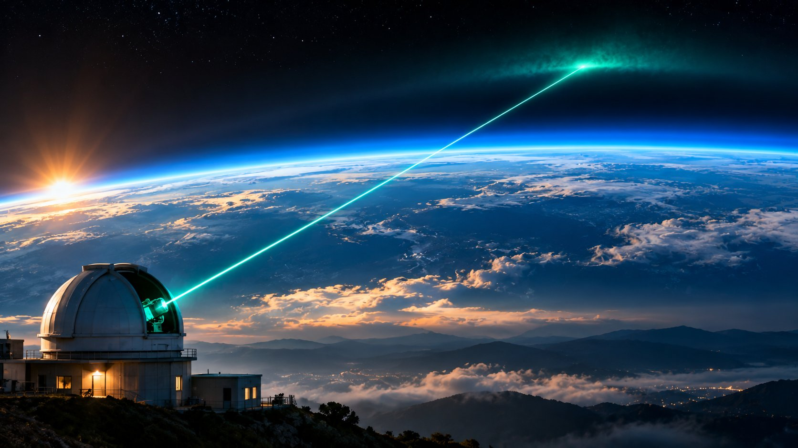

Science & Technology / Atmospheric sensing · Engagement pilot
How Do You Measure Temperature 400 Miles Above Earth? Scientists Are Using Lasers.
A new helium-based laser technique reaches a difficult-to-measure region of the upper atmosphere—and offers a lesson in how scientists turn faint signals into reliable observations.

The discovery
Researchers retrieved temperature estimates from roughly 500–700 km above Earth using helium fluorescence LiDAR.
Why it matters
Upper-atmospheric measurements can help test models of the near-space environment.
What remains uncertain
Weak signals, retrieval assumptions, limited observing windows and independent validation.
Evidence status
Peer-reviewed experimental research—not a UAP observation or identification system.
A thermometer where there is almost no air
Imagine trying to take the temperature hundreds of miles overhead. At these altitudes the atmosphere is extremely thin, ordinary weather instruments cannot simply be installed everywhere, and even faint measurements demand sophisticated equipment.
A study published in Geophysical Research Letters describes an ingenious approach: use carefully tuned laser light to interact with helium atoms in a long-lived excited state, then measure the extremely faint light they emit. Changes in that fluorescent signal help researchers estimate temperature.
How high is 700 kilometers?
The measured region lies above the typical orbit of the International Space Station. The diagram below puts the reported 500–700 km range in context; its vertical distances are schematic rather than proportional.
How can a laser measure temperature?
LiDAR is often associated with mapping terrain or measuring distance. In this study, the relevant information comes from the spectrum of light produced by metastable helium after excitation. Researchers sample the response at three nearby wavelengths and use a model to retrieve a temperature profile.
The return signal is exceptionally faint. High-sensitivity detectors and careful signal processing are central to the technique; the measurement is an inference from observed light, not a direct thermometer reading.
Why should GreyAlien readers care?
The study does not investigate unidentified aerial phenomena, and the instrument is not a demonstrated UAP detector. Its relevance is the scientific method: understand the environment, the instrument, the assumptions and the uncertainties before drawing conclusions from an unusual signal.
Not established: That the system identifies unusual objects, explains particular UAP cases, or proves extraordinary technology.
What still needs to be tested?
Temperature estimates depend on signal strength and assumptions used in the retrieval, including how atmospheric motion is handled. The comparison with nearby radar-derived ion temperatures provides useful context, but those instruments do not measure exactly the same physical quantity. Longer observation series and independent comparisons would help establish robustness across different conditions.
The broader lesson is simple: an unusual measurement is a starting point for investigation, not a conclusion. Better instruments make better questions possible.
Explore the technical research, evidence and limitations
Original publication
Temperature Measurements up to 700 km Using Metastable Helium Fluorescence LiDAR, Geophysical Research Letters, published November 12, 2026. Read the original peer-reviewed paper (DOI).
Method overview
Three-wavelength probing of metastable helium near 1083 nm is used to retrieve thermospheric/exospheric temperature from fluorescence spectral response. Interpretation depends on a retrieval model and instrumental sensitivity.
Evidence assessment
Strength: Instrumental observations reported in a peer-reviewed journal, with quantitative retrievals and comparison against independent nearby measurements.
Limitations: Low photon counts, observation-window constraints, uncertainties in retrieved temperature, wind assumptions and the distinction between neutral-helium and radar-derived ion temperatures.
Scope: A demonstration of measurement capability. It is not a global, operational temperature monitoring network.
Continue exploring
Editorial standard: Lead with curiosity. Explain with clarity. Support with evidence.